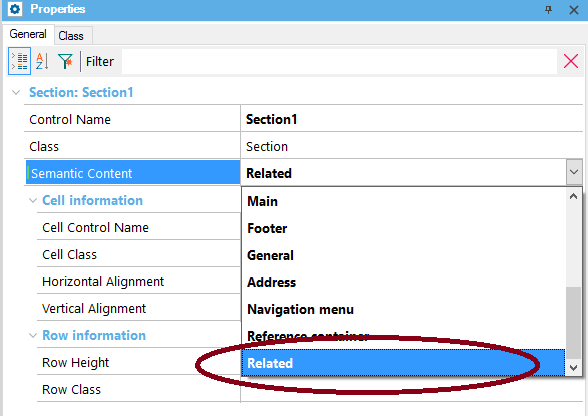

The Semantic content property allows determining the HTML attribute that will be generated for the control. Values
Description
Its purpose is to give semantics to the HTML and to comply with the recommendations related to Accessibility for Web Applications. It applies to the Section Control. Samples
Below are the properties for the section control whose ID is Section1. Note that the Semantic content property is set to "Related".  So, the resulting HTML code is as follows: <aside id="SECTION1" class="Section" style=""> <span class="TextBlock" id="TEXTBLOCK8">Test</span> </aside> |